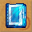
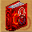
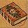
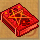
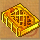
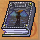

圖示產品名重量等級需求工作經驗商店售價需要原料
 筆記本1013812黑檀木 4 牛皮 2 水晶 2
軟皮書15106930鐵杉 4 鹿皮 2 紫晶 2
鐵皮書2025111063紅豆杉 4 鹿皮 2 珊瑚 2
修士入門之書2040161270彩虹木 4 犀牛皮 2 貓眼石 2
 魔法參考書3055211469晶石木 4 犀牛皮 2 祖母綠 2
煉金術大全3070261686天杉 4 鱷魚皮 2 孔雀石 2
 魔導士褐皮書3054211867天杉 4 貂皮 2 黃寶石 2
魔導士綠皮書3056211867天杉 4 貂皮 2 綠寶石 2
 魔導士紅皮書3058221867天杉 4 貂皮 2 紅寶石 2
魔導士藍皮書3060231867天杉 4 貂皮 2 藍寶石 2
 魔導士黃皮書3062231867天杉 4 貂皮 2 白寶石 2
魔導士黑皮書3064241867天杉 4 貂皮 2 黑曜石 2
魔導士白皮書3066251867天杉 4 貂皮 2 鑽石 2
煉金術大全3070381916天杉 4 鱷魚皮 2 孔雀石 2
健康生活指南3080422213黑鐵木 4 鱷魚皮 2 琥珀 2
 流浪者之書30| 90 | | | | | | | | | | | | | | | | | | | | | | | | | | | | | | | | | | | | | | | | | | | | | | | | | | | | | | | | | | | | | | | | | | | | | | | | | | | | | | | | | | | | | | | | | | | | | | | | | | | | | | | | | | | | | | | | | | | |